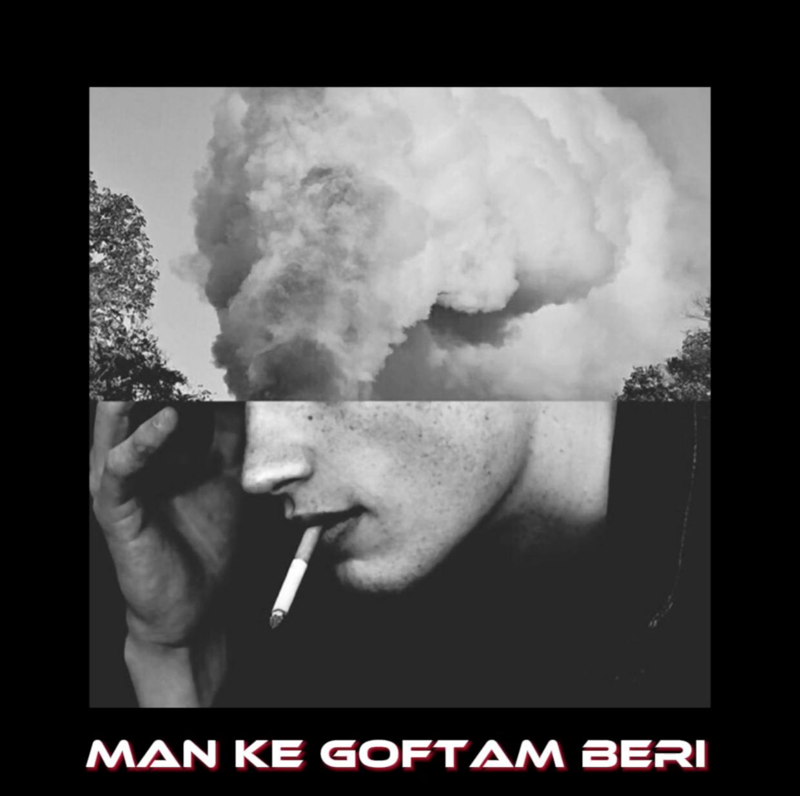

<!DOCTYPE html>
<html lang="en">
  <head>
    <meta charset="utf-8" />
    <meta
      name="viewport"
      content="width=device-width, initial-scale=1.0, shrink-to-fit=no"
    />
    <title>man ke Goftam beri</title>
    <link rel="stylesheet" href="assets/bootstrap/css/bootstrap.min.css" />
    <link rel="stylesheet" href="fonts/ionicons.min.css" />
    <link rel="stylesheet" href="./1Footer-Dark.css" />
    <link rel="stylesheet" href="./styles.css" />
    <meta
      name="description"
      content="دانلود  موزیک جدید (من که گفتم بری) از dark"
    />
    <meta name="keyword" content="دانلود,موزیک,دارک,من که گفتم بری,dark," />
  </head>

  <body>
    <footer class="footer-dark">
      <div class="container">
        <div class="row">
          <div class="ti">
            <h2>man ke Goftam beri</h2>
            <h6>new music from dark</h6>
          </div>
          <hr />
          <div class="moco">
            <div>
                
            </div>
              <div>
                <audio class="moz" controls preload="none">
                  <source src="./Mnkgoftam.mp3" type="audio/mp3" />
                </audio>
              </div>
          </div>
          <div class="col-md-6 item text">
            <br />
            <hr />
            <h2>lyrics</h2>
            <p class="lyrics">
              من که گفتم بری میگیره چشامو اشک‌ فقد
              <br />
              میترسم کاری بر نیاد اصن از دستمم
              <br />
              هر‌ موقع برگردی بیبی بدون هستم من
              <br />
              ولی لطفا شبا دست بردار از سرم
              <br />
              <br />
              بگو اخه عوضی
              <br />
              چی عوض میشه بعد از این
              <br />
              جدایی قول دادی در کار نیس
              <br />
              اصن رفتنی
              <br />
              ولی خودت رفتی
              <br />
              دستامو تو ول کردی
              <br />
              تو رو سیل نبرد
              <br />
              بیبی ریشتو خودت کندی
              <br />
              رفتم نمیبینی دیگه منو نه
              <br />
              حتما ندونستیم قدر همو نه
              <br />
              منم دیگه دور شدم ع خودم
              <br />
              اصلا شدم دیگه بعدت سروته
              <br />
              میپیچم به پات هرجا بری
              <br />
              بری تو تاریکی تنها ک چی
              <br />
              من ک گفتم بهت
              <br />
              گرمم بات حتی سرما بشی
              <br />
              من گفتم بری این دیوونه میمیره
              <br />
              پاهاشو بشکنی پایه حرفات میشینه
              <br />
              بگو دیونه تر از من اخه کی دیده
              <br />
              هنوزم ویسات برام شبا رو ریپیده
              <br />
              <br />
              من که گفتم بری میگیره چشامو اشک‌ فقد
              <br />
              میترسم کاری بر نیاد اصن از دستمم
              <br />
              هر‌ موقع برگردی بیبی بدون هستم من
              <br />
              ولی لطفا شبا دست بردار از سرم
              <br />
            </p>
          </div>
         
          </div>
          
          <hr />
          <div class="col item social">
            <p>instagram</p>
            <a href="Https://instagram.com/d4rkam" target="_blank">
              <i class="icon ion-social-instagram"></i
            ></a>
          </div>
        </div>
        <p class="copyright">
          <a
            class="mili"
            href="Https://instagram.com/ramezani._.milad"
            target="_blank"
          >
            cr : milad ramezani © 2022
          </a>
        </p>
      </div>
    </footer>
    <script src="assets/bootstrap/js/bootstrap.min.js"></script>
  </body>
</html>
